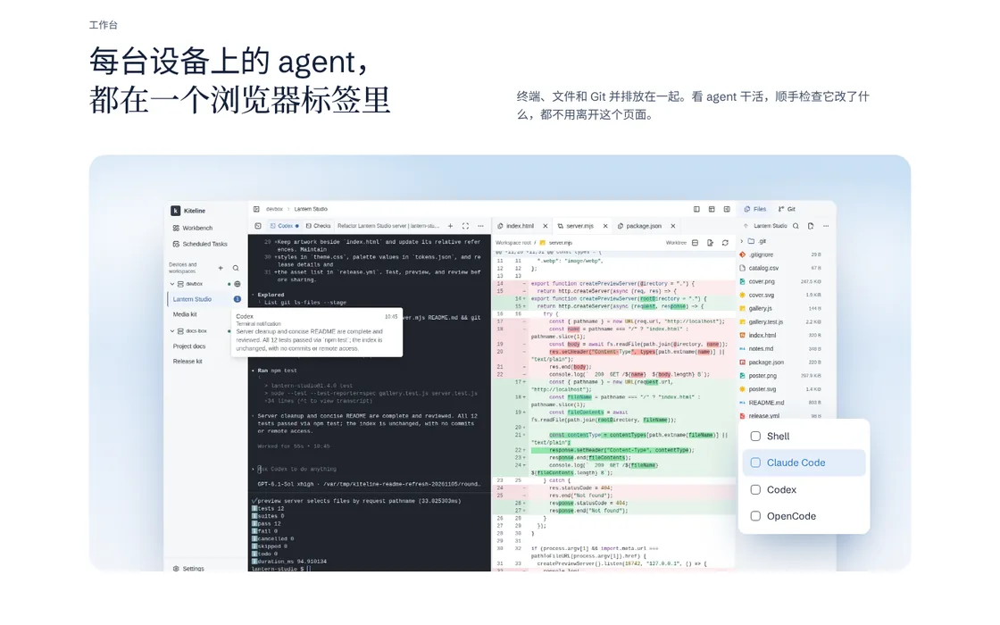
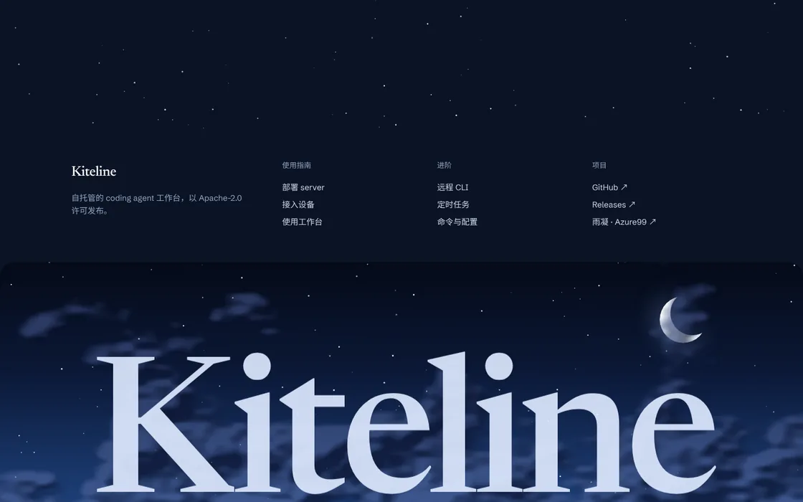

Kiteline 主页原型
B
版及其两个变体。三者共用同一页面与同一套内容，仅在氛围的延续方式上不同；页面底部的切换条可在三者之间即时切换并保留滚动位置，便于逐段对比，也可切换中英文。
B · BASELINE 对照
晴空
基准版本。首屏为实时绘制的天空与风筝，其后为白色内容页。
- 氛围
- 集中于首屏与页脚；中段为常规的浅色版面
- 用途
- 作为 B1、B2 的对照
查看 B →
B1 · THE LINE 新增
贯线
风筝线不在首屏结束：它在内容页的顶角交接，沿左侧向下贯穿全页，最终落入部署命令。
- 做法
- 各区块标题以圆环挂在线上；线随滚动逐段画出，末端带光点
- 取舍
- 版面与 B 一致；窄屏下正文左侧让出约 32px 给这条线
查看 B1 →


B2 · DUSK 新增
暮色
首屏为白昼；内容页随滚动由日间过渡至黄昏与夜空，页脚为星空。
- 做法
- 每个区块对应一个时段，色调在下一区块进入视口时过渡；夜间区块带星点
- 取舍
- 版面与 B 一致；过渡瞬间文字对比度会短暂下降
查看 B2 →
已归档的方向：A 夜航、C 昼夜。两者保留原样，未随本轮更新。
本轮通用打磨
-
截图：中文页使用中文界面截图，英文页使用英文界面截图，随语言切换；均取自从源码运行的实例。
-
裁切：四个功能标签分别使用 1080 px
宽视口的截图或单个对话框的裁切，文字在桌面宽度下可辨认；手机宽度下进一步放大为局部。
- 首屏：窄屏下罩层改为自下而上覆盖正文区域，并减少该区域的云量。
素材说明
-
“原生 TUI”截图中运行的是 OpenCode。当前环境没有已登录的 Claude Code 或
Codex，故未能截取二者的界面。
-
“开发预览”与“远程 CLI”两个标签使用工作台中“访问端口”与“在 CLI 中接续”对话框的截图。
- 页面内的设备列表、通知与定时任务卡片仍为演示数据。
配色来源
取自 rainng.com 的导航栏、链接、头图天空与页面背景；B2
的黄昏与夜色由这组蓝色向暖色与深色延伸。
导航蓝#2875c1
头图天空#3a83c2
页面背景#97c3dd
暖色高光#ffe6cc
暮色#2c2c62
夜色#0b1324